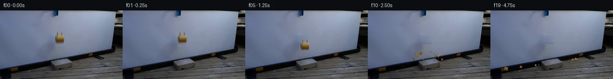

![首帧]()

Round 00
2026-11-05T04:27:10.241969+00:00像素候选变化代码 +327/−0inspection 更新
pixels 8909086ec1f703fd · code df6c4f63d153bdbf
查看本轮 generate.py 真实 diff
--- previous/generate.py
+++ current/generate.py
@@ -0,0 +1,327 @@
+from pathlib import Path
+import hashlib
+import json
+import math
+
+import numpy as np
+from PIL import Image, ImageDraw, ImageFilter
+
+import artifact_io
+
+
+ROOT = Path(__file__).resolve().parent
+W, H = 256, 144
+RESAMPLE = Image.Resampling.BICUBIC
+
+
+def mug_mask(rgb):
+ """Color-separate the warm ceramic from the cool neutral screen."""
+ a = rgb.astype(np.int16)
+ yy, xx = np.indices((H, W))
+ roi = (xx >= 110) & (xx < 139) & (yy >= 42) & (yy < 72)
+ warm = (a[:, :, 0] - a[:, :, 2] > 7) & (a[:, :, 1] - a[:, :, 2] > 2)
+ return roi & warm
+
+
+def soft_mask(mask, dilate=3, blur=0.65):
+ m = Image.fromarray(mask.astype(np.uint8) * 255, "L")
+ if dilate > 1:
+ m = m.filter(ImageFilter.MaxFilter(dilate))
+ if blur:
+ m = m.filter(ImageFilter.GaussianBlur(blur))
+ return np.asarray(m, dtype=np.uint8)
+
+
+def reconstructed_background(src, hard_mask):
+ """Replace only the mug footprint using row-wise samples of the screen."""
+ out = src.astype(np.float32).copy()
+ erase = soft_mask(hard_mask, dilate=5, blur=1.0).astype(np.float32) / 255.0
+
+ # The source screen is gently varying. For each affected row interpolate
+ # between robust samples immediately to the left and right of the mug.
+ predicted = src.astype(np.float32).copy()
+ for y in range(40, 74):
+ left = np.median(src[y, 107:112].astype(np.float32), axis=0)
+ right = np.median(src[y, 138:143].astype(np.float32), axis=0)
+ for x in range(110, 140):
+ u = (x - 110) / 29.0
+ predicted[y, x] = left * (1.0 - u) + right * u
+
+ aa = erase[:, :, None]
+ out = out * (1.0 - aa) + predicted * aa
+ return np.clip(np.rint(out), 0, 255).astype(np.uint8)
+
+
+def make_sprite(src, hard_mask):
+ box = (110, 42, 139, 72)
+ alpha = soft_mask(hard_mask, dilate=3, blur=0.55)
+ rgba = np.dstack([src, alpha])
+ return Image.fromarray(rgba, "RGBA").crop(box), box
+
+
+def alpha_over_rgb(rgb, overlay):
+ base = Image.fromarray(rgb, "RGB").convert("RGBA")
+ return np.asarray(Image.alpha_composite(base, overlay).convert("RGB"), dtype=np.uint8)
+
+
+def add_soft_shadow(rgb, strength, center=(125, 104), radius=(12, 3)):
+ if strength <= 0:
+ return rgb
+ layer = Image.new("RGBA", (W, H), (0, 0, 0, 0))
+ d = ImageDraw.Draw(layer)
+ x, y = center
+ rx, ry = radius
+ d.ellipse((x - rx, y - ry, x + rx, y + ry), fill=(15, 13, 10, int(strength)))
+ layer = layer.filter(ImageFilter.GaussianBlur(2.0))
+ return alpha_over_rgb(rgb, layer)
+
+
+def place_mug(rgb, sprite, box, dy, angle=0.0, squash=1.0, blur=0.0):
+ obj = sprite
+ if squash != 1.0:
+ obj = obj.resize((obj.width, max(1, int(round(obj.height * squash)))), RESAMPLE)
+ if abs(angle) > 0.01:
+ obj = obj.rotate(angle, resample=RESAMPLE, expand=True)
+ if blur > 0:
+ obj = obj.filter(ImageFilter.GaussianBlur(blur))
+
… diff truncated; 240 more lines …